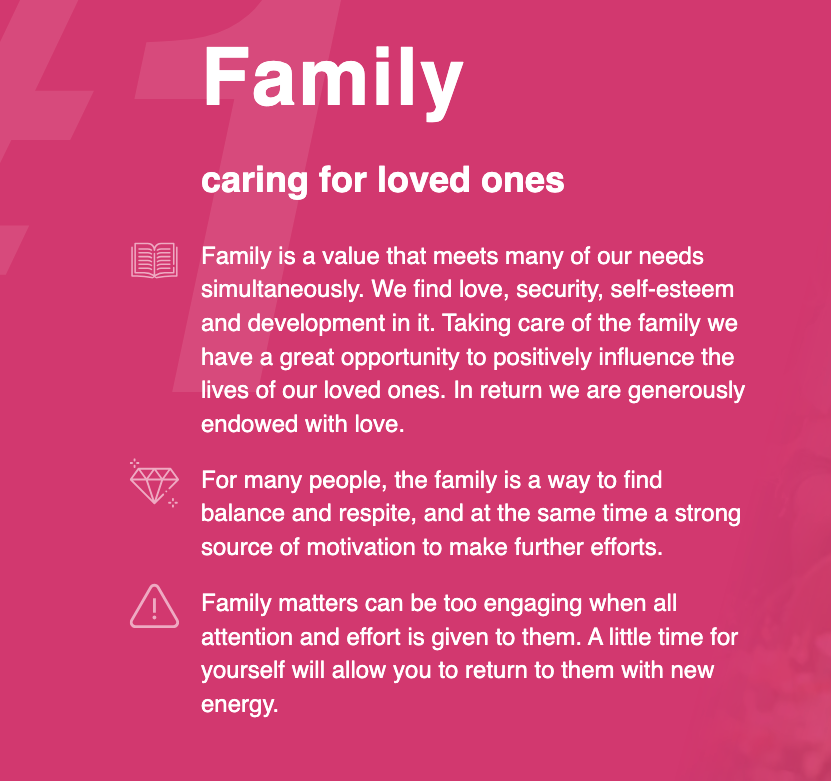
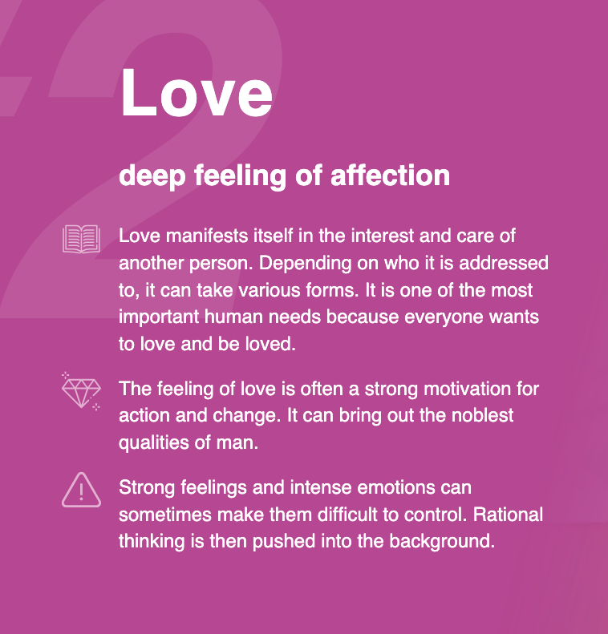
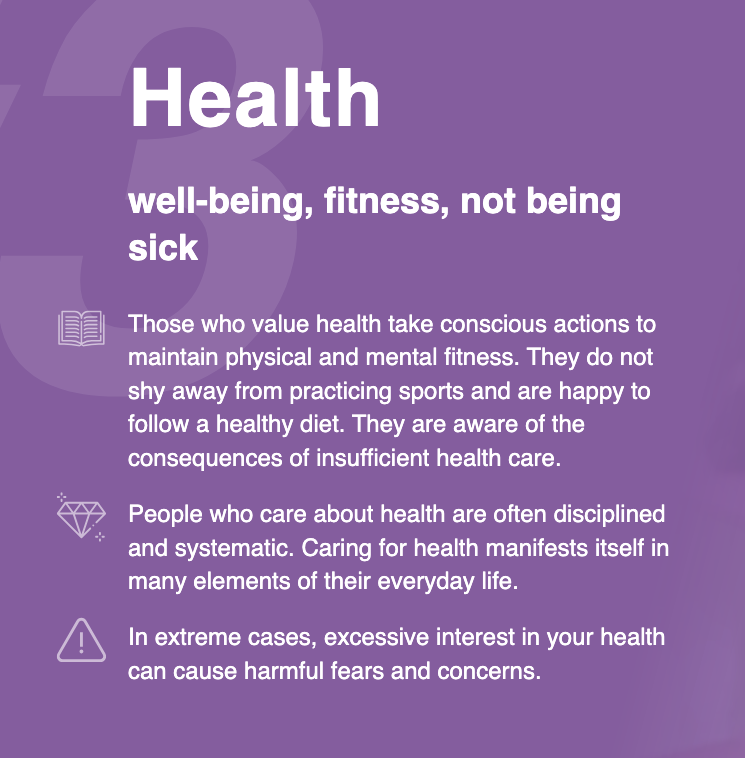
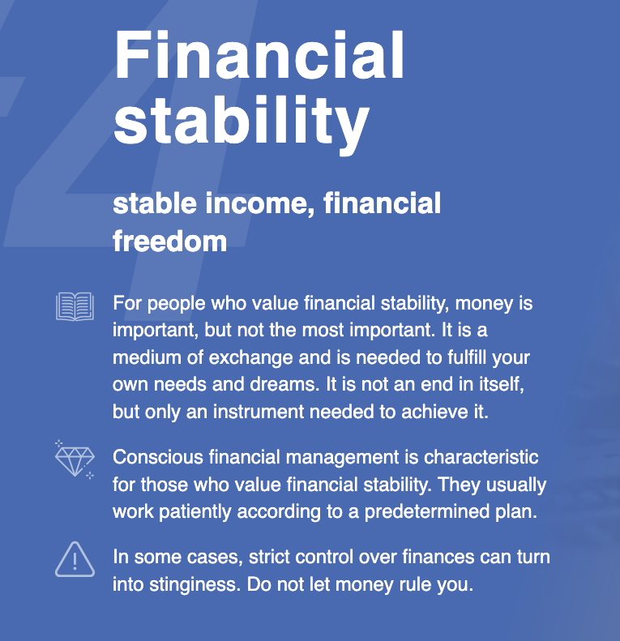
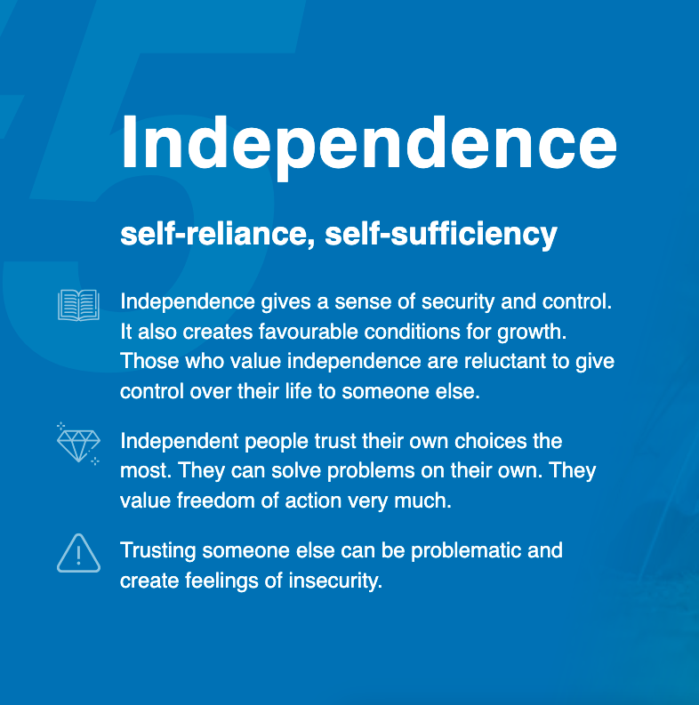

Who am I? I think that exploring who I am and actually talking about it is very important in this chapter of my life. I have put in so much hard work mentally over the past couple years to really change my mindset and re-evaluate what I want to do with my life. I'm very much trying to get comfortable with change, get comfortable with not being perfect, and try to find a good balance in all aspects of my life. There's so many things I want to do and achieve so it's important for me to be ticking boxes in all areas of life and not just focus on one thing at a time with intensity. Here's to balance and self exploration at 22 years young!
Personal Values I took a personal values test online and the top 5 values I resonated with were as follows:
- Family
- Love
- Health
- Financial Stability
- Independence

Family: Family is so important to me, I'm very close with my mum and pretty close with my sisters and nephew. I always enjoy spending time with them doing simple things such as going for walks, lunch dates, and talking about how things are going with them. I have never had very many friends (which I'm now totally comfortable with), so it's nice to have a family that I am close with and can rely on no matter what. With my nephew now in the family too, I feel like this has bought us all a little bit closer which I am grateful for. My sister and nephew are currently living in Tauranga but may be moving back to the Bay soon which I am so excited for! I also have to remember to put myself first and set aside time for myself over family as that is so important for my health too. I love my mama bear and she is the reason us girls have stuck so closely together.

Love: Love is the second value that came in strongly for me after this quiz. Love and being kind and caring is also important to me and has been an emotion that I have struggled embracing and understanding in the past. As important as it is to show this emotion towards other people that are close in your life, I think it's most important to show deep love and caring for yourself. This is the current journey that I am on and I can confirm this is and will be a very long journey. I'm starting to show love to myself in many ways such as actually listening to what I want, eating things that make me feel good and moving my body to feel good. It took me such a long time to get to this place and I'm proud of myself.

Health: I have let myself go over the past couple years and am now realising how important health is to me, I just didn't have the right approach to maintain good health initially. I would often have extreme approaches to exercise and dieting but realistically health means so much more than being a certain weight. It's about how you're feeling, creating something that's maintainable for you, and making sure you can still balance this with other activities. I have been through a lot and made so many mistakes with my health, but at the end of the day that is what has gotten me to the point I am at now.

Financial Stability: Financial Stability has become a lot more important to me recently - I associate this with being comfortable, stress free, and having more free time freedom to do things I enjoy. I would like to have nice things also but a nice house is the most important asset for me. I also like trying new things and want to travel so having better control over my money is what I'm working towards. Being more self aware so I can work on saving and investing money towards my future is another focus.

Independence: Independence and self reliance is also very important. I want to know I can rely on myself and not need to rely on anyone else for anything as I don't like to hold expectations to people as that often leads to disappointment. I want to be self-sufficient and push myself to create the good future I know I'm capable of. I'm smart and I know there are great things out there waiting for me, and I'll get them once I'm ready for it.
Explore a little deeper..
Explain a situation where you have made an ethical decision. Discuss how you weighed up the values involved in that decision, the decision you made, and how you reflect on the decision now - a small example of an ethical decision I made recently was telling the receptionist all of the things we took from the mini bar during our stay at a hotel in Auckland. The optimal and ethical choice was to be honest and tell them all of the things we took from the mini bar overnight so we could settle our bill at once. The receptionists show trust in simply asking us whether we took anything from the mini bar and I believe we should be showing the same trust back in letting them know all the items we took. It was a small ethical act but it displays honestly. Reflecting on this decision now, it was the right decision and supported my values. We thoroughly enjoyed our stay and would like to stay there again so would not like to cause any issues.
Describe how your culture and the people around you have influenced your values and identity - the people you surround yourself with or even your family absolutely influence your values and identity strongly. I think I’ve always been quite a strong minded and determined individual so I won’t let others affect my core values. However, having a split family I have had two different family dynamics to look at and observe. So both sides of my family are quite set in their ways of thinking but ultimately one side of my family is more kind and caring and the other side a bit more selfish. I have really had the time to reflect on the different values and behaviors each side of my family has to determine the kind of person I want to be. I am kind, caring, ambitious, smart, actively learning, modest and more. I have a desire to be financially comfortable and have nice things which is not greedy as the poor often think. I ultimately have picked up on the things I agree with to decide the type of person I want to be.
Identify your strengths and how they will support you during your learning journey - I am a very determined person with a balanced approach to learning new things which I think will take me very far in software development. Being balanced and working smarter, not harder are all things that align with me and I believe will help me succeed. Having a more balanced approach will help me make sure I'm still taking care of other aspects of my life while giving the necessary time and dedication to this learning journey. Another strength that I am currently developing is being comfortable making mistakes! You learn so much more when you make mistakes and break things with software development. And even better, the answer to fixing your situation is always a google away.
Evaluate your limitations in terms of your learning and career development. How might these affect your learning journey? - I think the biggest limitation I have is self confidence. This affects all areas of my life but this is something I can definitely improve. If I don't push myself out of my comfort zone in terms of confidence and putting myself out there in team situations, that will negatively impact my learning journey. I owe it to myself to share with everyone my knowledge and believe in myself more than I currently do.
Share an example of when you were trying to work productively with others, but there was resistance or tension. Discuss strategies you tried at the time, how effective they were, and your reflections on what other strategies you would try now and why - When I was working in retail I was a keyholder and often in charge of others on shift when the manager wasn't there so I would usually be working with others on my own and be in charge of making sure we were working productively and thinking of things we could do during quiet times. For a period of time I was working with one or two people that wouldn't take the initiative to find something to do if it were quiet, and I could sense tension and resistance when I would ask them to do things as I was a bit younger than they were. From this point I started thinking of tasks in the morning before they would arrive and write lists of the things each of us needed to complete during our shift in down time so we always had something to do. I found that having a list decreased friction because I didn't need to actively ask them to do something they could go off on their own and do the things that needed to be done independently. I found this really useful as they were able to tick things off as they went which also gives you satisfaction and they could do so independently. Reflecting on this now I would also get them more actively involved in writing the lists so they could take more responsibility.